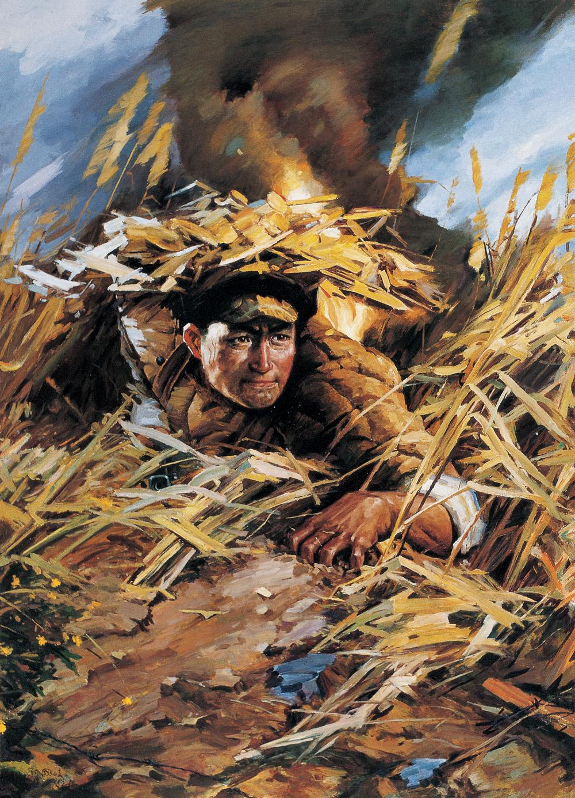

>>永远的丰碑
邱少云：为胜利自我牺牲的伟大战士
来源：新华社

在朝鲜邱少云牺牲的391高地，高高地耸立着一座石壁，上面镌刻着一行鲜艳夺目的红漆大字：“为整体、为胜利而自我牺牲的伟大战士邱少云同志永垂不朽！”
邱少云，1926年生，四川省铜梁县人。1949年12月参加中国人民解放军。作战勇敢，在一次剿匪战斗中带病参战，毙伤匪徒10余名。1951年3月参加中国人民志愿军赴朝作战。部队开赴前线途中，他冒着美军飞机的扫射轰炸，从燃烧的居民房屋里救出1名朝鲜儿童。
1952年10月，所在部队担负攻击金化以西“联合国军”前哨阵地391高地。为缩短进攻距离，便于突然发起攻击，11日夜，部队组织500余人在敌阵地前沿的草丛中潜伏。12日12时左右，美军盲目发射燃烧弹，其中一发落在他潜伏点附近，草丛立即燃烧起来，火势迅速蔓延到他身上。邱少云身后就是一条水沟，只要他后退几步，就势一翻，就可在泥水里将火苗扑灭。但为了不暴露目标，确保全体潜伏人员的安全和攻击任务的完成，他放弃自救，咬紧牙关，任凭烈火烧焦头发和皮肉，坚持30多分钟，直至壮烈牺牲。实践了他在入党申请书中所写：“为了世界革命，为了战斗的胜利，我愿意献出自己的一切！”的钢铁誓言。
战后，所在部队党委追认他为中国共产党党员，并追授“模范青年团员”称号。中国人民志愿军总部给他追记特等功，追授他“一级英雄”称号。朝鲜民主主义人民共和国最高人民会议常任委员会追授他“朝鲜民主主义人民共和国英雄”称号和金星奖章、一级国旗勋章。
责任编辑：xxx